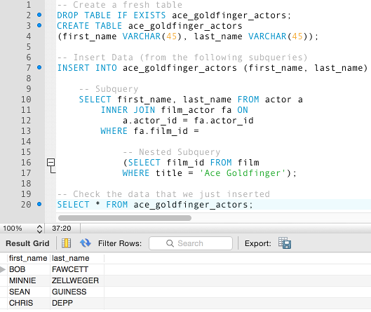

Databases
A database is a collection of information, and that's it.
(This is too big of a subject to cover properly)
However it is not as simple as that. Most databases collects its data in tables, schemas and views. (You gonna have to google these ones yourself)
Databases are used to store all kind of information. Everything from usernames and passwords to flight information on a airport.
Whenever you are out shopping and swipe your card, a code is read from your magnet strip (or chip) that is sendt over a network to a database, which authenticates that you have sufficient funds in your account to acquire the wares you are purchasing, and later subtract the cost from your account.
To access a database you need a DBMS, DataBase Manangement System.
Popular DBMS include: Oracle, MySQL and Microsoft SQL server.
SQL stands for Structured Query Language.
A database if often mapped with a UML diagram, that shows the databases building blocks.
This is where I found most of my information on databases
Here are some example pictures from google images:
Picture one is an example of MySQL code

(Source: https://www.quackit.com/pix/mysql/examples/mysql_subquery_3.png)
Picture two is of an UML diagram

(Source: https://www.ntu.edu.sg/home/ehchua/programming/sql/images/SampleEmployees.png)